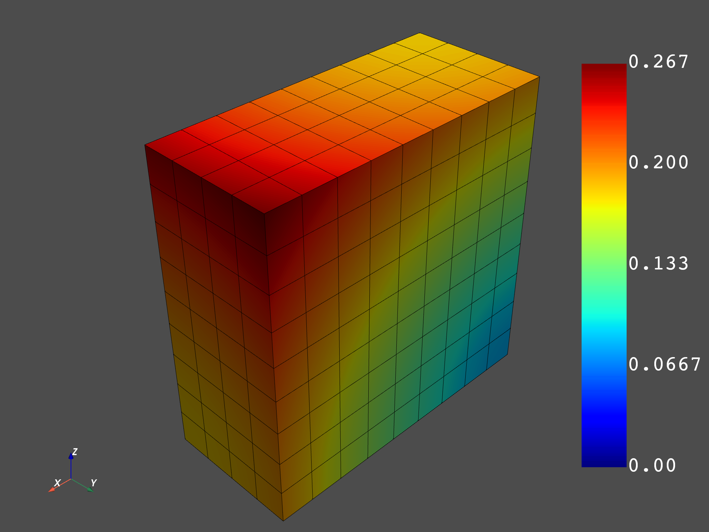

Note
Click here to download the full example code
Create your own entities to use dpf’s operators¶
Create your own entities: field/fields container/meshed region to use dpf’operators with your own data The ability to create any of dpf’s entity in scripting allows to not depend on result files and to connect dpf’s environement with any python tools.
import numpy as np
from ansys.dpf import core as dpf
from ansys.dpf.core import operators as ops
Here a parallelepiped mesh made of linear hexa will be created
length = 0.1
width = 0.05
depth = 0.1
num_nodes_in_length = 10
num_nodes_in_width = 5
num_nodes_in_depth = 10
mesh = dpf.MeshedRegion()
def search_sequence_numpy(arr,seq):
indexes = np.where(np.isclose(arr,seq[0]))
for index in np.nditer(indexes[0]) :
if index%3==0:
if np.allclose(arr[index+1],seq[1]) and np.allclose(arr[index+2],seq[2]):
return index
return -1
Add nodes
id =1
for i,x in enumerate([float(i)*length/float(num_nodes_in_length) for i in range(0, num_nodes_in_length)]):
for j,y in enumerate([ float(i)*width/float(num_nodes_in_width) for i in range(0, num_nodes_in_width)]):
for k,z in enumerate([float(i)*depth/float(num_nodes_in_depth) for i in range(0, num_nodes_in_depth)]):
mesh.nodes.add_node(id, [x,y,z])
id +=1
Get nodes coordinates field
coordinates = mesh.nodes.coordinates_field
Set the mesh unit
mesh.unit = "mm"
coordinates_data = coordinates.data
flat_coordinates_data = coordinates_data.reshape(coordinates_data.size)
coordinates_scoping = coordinates.scoping
Add solid elements (linear hexa with 8 nodes)
id =1
for i,x in enumerate([float(i)*length/float(num_nodes_in_length) for i in range(0, num_nodes_in_length-1)]):
for j,y in enumerate([ float(i)*width/float(num_nodes_in_width) for i in range(0, num_nodes_in_width-1)]):
for k,z in enumerate([float(i)*depth/float(num_nodes_in_depth) for i in range(0, num_nodes_in_depth-1)]):
coord1 = np.array([x,y,z])
connectivity=[]
for xx in [x, x+ length/float(num_nodes_in_length)]:
for yy in [y, y+ width/float(num_nodes_in_width)]:
for zz in [z, z+ depth/float(num_nodes_in_depth)]:
data_index = search_sequence_numpy(flat_coordinates_data,[xx,yy,zz])
scoping_index = int(data_index/3) #3components
connectivity.append(scoping_index)
#rearrange connectivity
tmp =connectivity[2]
connectivity[2] =connectivity[3]
connectivity[3] = tmp
tmp = connectivity[6]
connectivity[6] =connectivity[7]
connectivity[7] =tmp
mesh.elements.add_solid_element(id, connectivity)
mesh.plot()
Out:
[(0.19380692678179334, 0.16880692678179335, 0.19380692678179334),
(0.045, 0.02, 0.045),
(0.0, 0.0, 1.0)]
Create displacement fields over time with 3 time sets Here the displacement on each node will be the value of its x,y,z coordinates for time 1 the displacement on each node will be twice the value of its x,y,z coordinates for time 2 the displacement on each node will be three time the value of its x,y,z coordinates for time 3
num_nodes = mesh.nodes.n_nodes
time1_array = coordinates_data
time2_array = 2.0 *coordinates_data
time3_array = 3.0 *coordinates_data
time1_field = dpf.fields_factory.create_3d_vector_field(num_nodes)
time2_field = dpf.fields_factory.create_3d_vector_field(num_nodes)
time3_field = dpf.fields_factory.create_3d_vector_field(num_nodes)
time1_field.scoping = coordinates.scoping
time2_field.scoping = coordinates.scoping
time3_field.scoping = coordinates.scoping
time1_field.data = time1_array
time2_field.data = time2_array
time3_field.data = time3_array
time1_field.unit = mesh.unit
time2_field.unit = mesh.unit
time3_field.unit = mesh.unit
Create results over times in a fields container with its time freq support
fc = dpf.fields_container_factory.over_time_freq_fields_container({0.1:time1_field, 0.2:time2_field, 0.3:time3_field},"s")
Check that the time freq support has been built
print(fc.time_freq_support)
Out:
DPF Time/Freq Support:
Number of sets: 3
Cumulative Time (s) LoadStep Substep
1 0.100000 1 1
2 0.200000 1 2
3 0.300000 1 3
Plot the norm over time of our fields container
norm = ops.math.norm_fc(fc)
fc_norm = norm.outputs.fields_container()
mesh.plot(fc_norm.get_field_by_time_complex_ids(1))
mesh.plot(fc_norm.get_field_by_time_complex_ids(2))
mesh.plot(fc_norm.get_field_by_time_complex_ids(3))
- 
Out:
[(0.19380692678179334, 0.16880692678179335, 0.19380692678179334),
(0.045, 0.02, 0.045),
(0.0, 0.0, 1.0)]
Total running time of the script: ( 0 minutes 5.667 seconds)